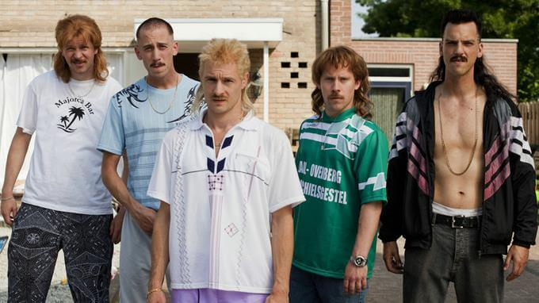

Son Histoire
La première édition du jeu est publiée en 1994 par Les Rêveurs de Runes. Le livre de base propose de jouer des Raoûl vivant dans le "campigne" (camping) de Plouerel Zou Kernel
en Bretagne. Le jeu est accompagné de cartes Raoûl utilisées par le système de jeu.
Un premier supplément, D'AC Raôul, est publié en juillet 1996 : il prend la forme d'un livret de 20 pages en noir et blanc accompagné
de 28 cartes Raoûl prédécoupées et d'une carte postale. Il propose un cadre de jeu, le "campigne" des Flots Bleus, base de départ des Raoûl.
Le supplément contient également des synopsis de scénarios supplémentaires. Un accessoire dérivé du jeu est également publié par l'éditeur : une boîte à camembert
vide dont l'étiquette reprend le dessin de la couverture du jeu
et qui n'a aucune utilité particulière si ce n'est d'entretenir l'ambiance
En 2003, Patrice Larcenet publie en auto-édition deux nouveaux suppléments sous forme numérique (chacun se compose de plusieurs fichiers de traitement
de texte Word ainsi que d'un fichier Flash). Le premier, Raoûl Company, décrit la vie des Raoûl dans un cadre de jeu tout différent : le milieu des grandes
entreprises, où les Raoûl survivent à coups de tickets restaurant, de surdose de café et de discussions douteuses sur leurs vies privées. Le supplément apporte
quelques modifications au système de jeu pour l'adapter à cet autre cadre : il s'agit essentiellement de renommer caractéristiques et attributs pour les adapter
au cadre de jeu, mais de nouvelles cartes sont également fournies. Enfin, deux petits jeux en Flash permettent de massacrer des managers à volonté
Le second, Raoûl X-Trem, propose de jouer des Raoûl au ski, dans la lignée de films comiques comme Les bronzés font du ski de Patrice Leconte.
Le fichier Flash contient la description d'une station de ski en Savoie dans laquelle les Raoûl sont notamment confrontés aux savoyards,
décrits comme encore pires que les Raoûl. La description du cadre de jeu est accompagnée d'une musique composée par Fredopal. Les fichiers
texte contiennent 18 nouvelles cartes Raoûl qui remplacent celles du jeu de base lorsqu'on joue dans ce cadre. Enfin, deux fichiers d'images
au format JPG constituent
le recto et le verso d'un écran de jeu destiné au meneur de jeu, à imprimer et à monter.
En 2004, une version allégée des règles du jeu, Raoûl Extra-Light, paraît sous forme papier et numérique en un petit
livret de 16 pages en noir et blanc au format A6 qui reprend uniquement le système de jeu,
sous une couverture illustrée par Manu Larcenet.
Le 1er octobre 2016, l'éditeur français de jeux de rôle Black Book Éditions annonce travailler sur une nouvelle édition du jeu qui doit rassembler
l'ensemble du matériel paru pour la première édition, mais avec un nouveau système de jeu, le tout devant paraître courant 20178.
Cette deuxième édition, écrite par Cédric Ferrand et illustrée par Monsieur le Chien et Augustin Rogeret, paraît en juin 2017.
Système de jeu
Dans Raoûl, les personnages-joueurs sont appelés des Raôul, tandis que le meneur de jeu est appelé le "Gros Con" (ou GC).
Le jeu est destiné à des parties courtes.
Chaque personnage est défini par trois caractéristiques : le Gras (le physique), la Moelle (l'intelligence) et le Culot
(qui permet de parvenir à ses fins en ennuyant un maximum de gens). Ces caractéristiques sont notées sur une échelle de 1 à 6,
le personnage étant d'autant plus mauvais que le score est haut (contrairement à la plupart des systèmes de jeu). Aux caractéristiques s'ajoutent des aptitudes secondaires aux intitulés également parodiques,
comme "Belote", "Mauvaise foi" ou "Pétanque", mesurées sur la même échelle
La résolution d'une action tentée par un personnage pendant une partie se fait en déterminant la difficulté de l'action sur une échelle,
puis en y comparant la caractéristique correspondante, éventuellement augmentée d'un attribut secondaire pertinent pour l'action (le tout sans recourir à des dés).
En outre, quel que soit le score d'un personnage,
il a toujours une chance sur deux d'échouer. Si un joueur possède une caravane, cela procure un bonus à son personnage dans le jeu.
Un jeu de cartes Raoûl complète le livre de base du jeu. Chaque joueur en pioche trois face cachée au début d'une partie et peut les retourner quand il le souhaite :
elles influencent alors les actions de son personnage ou plus généralement la partie en cours de façon humoristique. Par exemple, la carte "Oh la belle église" signifie
que le personnage doit absolument aller photographier le monument le plus proche avec ferveur,
"Grosse commission" l'oblige à aller se soulager au plus vite quelque part, d'autres s'intitulent "Pastis" ou "Enculés de blousons noirs", etc.
Accueil
Le ton délibérément satirique, allié au trait humoristique du dessinateur et à un faible prix de vente,
font du jeu un gros succès populaire qui se vend en France à 3 000 exemplaires.
Dans un article de 2016 revenant sur le jeu et l'histoire de sa gamme, Sébastien Ciot remarque que le jeu doit être pris au moins au deuxième degré et
qu'il est jouable sous certaines conditions : « les parties doivent être courtes, les scénarios pas trop compliqués (de toute façon, on s'en éloigne tellement vite...)
et, surtout, il faut jouer avec des gens dont on est sûr de partager l'humour » car « à Raoûl, on joue délibérément à se moquer de gens qu'on côtoie dans la vie de
tous les jours ». Il note cependant que le jeu « n'a pas fonctionné sur le long terme », pour deux raisons selon lui : parce que « malgré le succès critique et commercial,
il n'y a pas vraiment eu de gamme Raoûl », ce qui n'était de toute façon pas l'objectif du jeu ;
mais aussi parce que la jouabilité et la portée de critique sociale du jeu restent limitées par la forte part d'aléatoire incluse dans son système de jeu,
« le reléguant dans la catégorie des jeux supers drôles, mais manquant de profondeur ».
Création du Râoul de vos rêves
Ici tout est simplifié à l'extrême pour crée votre Raoul/R (Pj) on aura besoin que de 5D6, une fois ceci lancée vous pourrez les mettre ou bon vous semble.
Et vous avez en tout et pour tout que 3 caractéristiques qui vous donnes chacune 2 compétences , plus deux autres qui vous seront donné durant la création du R.
Plus vous êtes bas dans une carac mieux vous êtes
Voici leur liste
Le Gras vous donne : Encaisser comme un homme/ Cogner là où ça fait mal.
La Moelle vous donne : Te creuser le ciboulot/Faire gaffe à ce qui se passe.
Culot vous donne : Baratiner ton prochain/Mener ta petite enquête.
Exemple (fait en écrivant ces lignes) je lance mes 6D6 et voici mon résultat 4/1/3/6/2/3
1ère Étape choisir son origine entre :
- Créole (Gras4+,Moelle 5+,Culot 6+)
- Maghrébin (Gras 4+,Moelle 6+,Culot 5+)
- Campagnard (Gras 5+,Moelle 4+,Culot 6+)
- Ch'ti (Gras 5+,Moelle 6+,Culot 4+)
- Marseillais (Gras 6+,Moelle 4+,Culot 5+)
- Etranger (Gras 6+,Moelle 5+,Culot 4+) Sont regroupé ici les Allemand, Les Anglais , Les Polonais , Les Hollandais , Les Belges... ah non eux sont considéré comme des cailloux
2ème Étapes choisir ton mode de vie :
Vous verrez ici une nouveau terme la Baraka , elle représente la chance du R et le nombre de carte que tu pourra avoir en début de partie.
- Une tente minable qui prend l 'eau (Baraka 6)
- Une tente tout neuve de chez Décathlon (Baraka 5)
- Une grande tente marabout de l 'armée achetée au surplus militaire (Baraka 4)
- Une veille caravane toute rouillée (Baraka 3)
- Une belle caravane neuve de manouche (Baraka 2)
- Une maison de camping avec tout le confort moderne (Baraka 1)
3 ème Étapes choisir son métier il vous permettra de débloquer une compétence unique.
- Chauffeur (de bus, de camion, taxi...) vous donne :" Si, si, je l 'ai entendu sur RMC" (Moelle)
- Personne en autorité (CRS,vigile,gardien de nuit..) vous donne: "Écoute-moi bien bonhomme"(Gras)
- Chômeur ( volontaire, fin de droit , prof de l'arrêt-maladie) vous donne : "le sens de la débrouillardise" (Moelle)
- Fonctionnaire (DDE, PTT, EDF, Poste, Employé municipal...) vous donne :"Le pouvoir du formulaire BZ43-6" (Culot)
- Ouvrier ( Chaîne de montage, aux abattoirs, artisan, sur les chantiers...) vous donne :" Tous ensemble , tous ensemble ouais, ouais !"(Culot)
- Commerçant (Bar tabac, boucher, chasse et pêche, fromager...) vous donne:"Levé tôt et couché tard" (Gras)
4ème Étapes choisir son passe-temps,il vous donnera votre dernière compt.
- Militant (SPA, Manif pour tous, Fan-club, parti politique) vous donne :" Intimidation"
- Bouliste (pétanque, lyonnaise, bowling, boulingrin, curling..) vous donne :" En plein dans le cochonnets"
- Supporter (cyclisme, foot, F1, catch ...)vous donne "J'attendrai le jour et la nuit"
- Collectionneur ( bouchons, timbres, écussons...) vous donne :" Eurêka"
- Téléspectateur ( Télé-réalité, matchs de foot, jeux télévisés, feuilleton...) vous donne: " J'en rate pas une miette"
- Animateur (Dj, bingo, arbitre...) vous donne: "Faites du bruit!"
5ème Étape vous fera choisir votre Situation familiale dans la quel il faudra impliquer un autre Raoul .
- Vieux garçon
- Veuf
- Divorcé
- Marié
- A la colle
- C'est compliqué
Enfin Bonus 6ème Étape le moyen de locomotion
- Piéton/transport en commun
- Voiture sans permis
- Scooter/mobylette
- Voiture cabossée/Voiture volée/125 CC à trois roues
- Voiture basique/Moto 250 CC
- Voiture Tunning/ Moto 300CC et + /Harley-Davidson / Combi Volkswagen
Donc si on reprend mon exemple de jet de D 4/1/3/6/2/3
Les sources
Le Wikipédia
Où l'acheter
Ayé kouzin c'fini a plus dans l'bus .....lol
